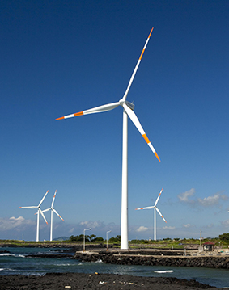

What rhymes with Jeju
going green
What rhymes with Jeju
clean energy
What rhymes with Jeju
potential
What rhymes with Jeju
your plans
What rhymes with Jeju
vitality
What rhymes with Jeju
your investment
1
/
이전
정지
재생
다음
투자상담
투자환경
뉴스·행사
홍보자료
제주라이프
투자프로젝트
유용한 링크
뉴스·행사
05
2020.11
제주도, 사물인터넷 분야 기술 2건 특허 확보
03
2020.11
제주산 계란 중동 두바이 갔다…한국인 경영 유통업체서 수입
29
2020.10
균형발전박람회 온라인 제주 전시관 선보여…디지털 뉴딜 소개
22
2020.10
제주도, 185개 관광업체에 272억원 관광진흥기금 융자 지원
발간물
2020 제주 투자정보
(Gangwon Investment...
2020.06.18
홍보영상
제주도에는 제주도가 참 많다
Zone Investment Promoti...
2020.06.18
제주라이프
레저산업
한라산에서 바다까지, 보는 여행에서 체험하는여행으로.
제주형 레저산업, 국내외 관광객을 유혹하다.
아열대 작물 산업 2부
함께 마음을 모으면 빛이난다.‘공심채농업회사법인’
우리나라 가구 중 1.6%인 33만이 다문화 가구다. 다문화 가구원은 100만명에 이른다. 열대 및 아열대 작물 소비는 다문화 사회 전환을 기회로 점차 증가하고 있다. 하지만, 여전히 인종 차별과 이주 여성 인권 문제 등 사회 문제가 끊이지 않는다. ‘함께 모으면 빛이 난다.’ 뜻의 이름을 가진 채소 ‘공심채’
아열대 작물 산업 1부
기후 변화 위기를 기회로 미래 먹거리를 선도하는 제주 열대 및 아열대 작물산업
제주 햇살을 머금고 잘 익은 올리브가 노지에 있는 올리브 나무에 매달려있다. 2미터가 넘는 바나나 나무 에는 바나나가 주렁주렁 열려 있고 사과처럼
화장품 원료산업 1부
한라산에서 바다까지, 보는 여행에서 체험하는 여행으로.
제주형 레저산업, 국내외 관광객을 유혹하다.
양돈산업
2차 가공업, 3차 서비스업까지 확장성이 있는 부가가치가 큰 1차 산업
제주도에서는 양돈산업의 경쟁력 확보를 위해 생산 기술 향상 및 유통 활성화에 적극 지원 중이다. ICT 융복합 사업으로 적정 사육 두수를 유지해 사육 밀도를 조정하고 분뇨처리와 사육 환경 관리를 위한 시스템을 개발 중이다. 또한, 가축 분뇨 인계 시스템을 구축해 지
신재생 에너지 산업

신재생 에너지 산업
전 세계가 주목하는 녹색 산업의 글로벌 메카로 도약하다. ‘탄소 없는 섬, 제주’를 향해 나아가는 굳건한발걸음
산업화가 남긴 눈부신 유산은 인류에게 윤택한 삶을 안겨주었지만, 환경파괴와 자원고갈 문제 또한 우리의 손에 쥐여 주었다. 이상 기후로 인한 자연재난이 일어날 때마다 대중 사이에선 ‘지구가 아프다’는 표현이 자주 오르내린다
화장품 원료산업 2부
한라산에서 바다까지, 보는여행에서